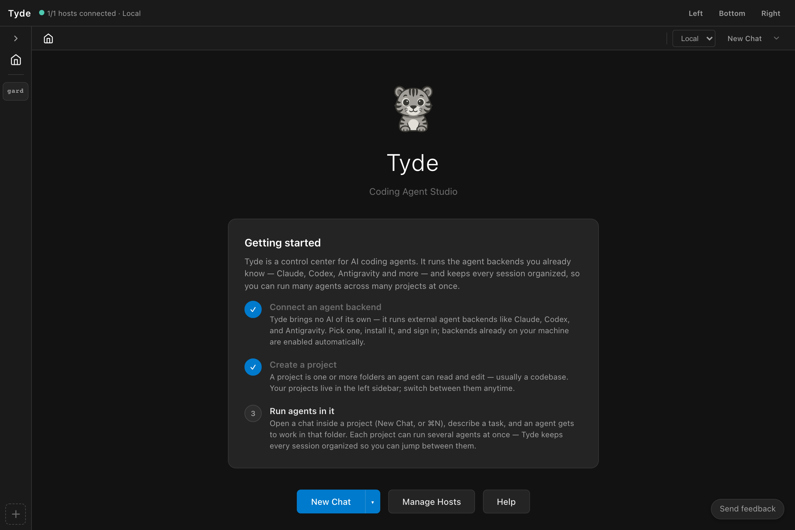

Start and manage a conversation
Choose a backend, start an agent, read its responses and tool activity, and send follow-up instructions.
Check the backend on your host
A backend is the CLI harness that runs your agent. Each conversation uses a selected backend; its available models and options appear in session settings.
- Open Settings → Backends. Check the host selector before changing settings.
- Choose the backend you want to use. Follow its installation or repair controls and any diagnostics shown by Tyde.
- Complete that backend’s authentication on the same machine where it will run. A login on your laptop does not automatically log in a remote server.
- Confirm the backend is available, and enable it for use. Choose a default if you want new conversations to start with it.
Use your existing setup. If you already use a supported CLI harness, start with that backend. Tyde still needs access to its executable and authentication on the selected host.
{kind=link}

Start without a project
- Choose New Chat from the home screen or command palette.
- Use the launch selector to choose an available agent or backend. Look at the session settings before sending: the chosen backend determines which options appear.
- Send a small request that requires no file access, such as the example below.
- Read the response, then send a follow-up in the same conversation.
Help me plan a small personal website. Ask me three questions about the audience and the pages I need. Don’t create any files yet.
The response appears in the same tab. This conversation has no project roots. To browse a repository and review changes from a code task, open a project and start an agent there.
Read responses and tool activity
The transcript contains your messages, the agent’s responses, and tool calls made during the turn. A tool card shows an operation such as reading a file or running a command. Expand it to inspect the available arguments and result. Check whether it is still running or has finished before interpreting its output.
The agent’s status describes the current turn. If it is waiting for an answer or permission, use the controls shown in the conversation. When the response is complete, send another message in the composer to continue with the same agent.
Send a follow-up or interrupt a turn
Give the agent a concrete outcome and any constraints it needs. When it asks a question or requests permission, respond through the conversation’s controls. Use the stop control when you need to interrupt a turn, then explain what should happen next.
Messages sent during a turn can enter the queue. Check the queued-message controls when you need to change direction immediately rather than wait for the current work. The visible agent status and conversation help you distinguish active work from a finished response.
For a code task, continue to Projects and files. For installation or authentication problems, see Backend unavailable.